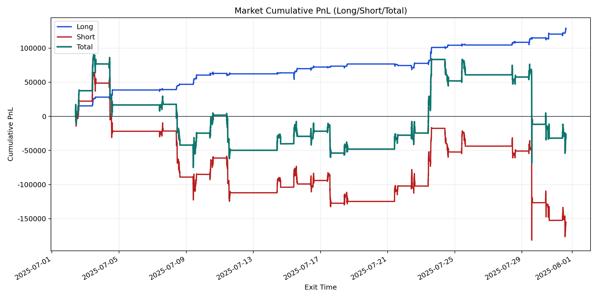
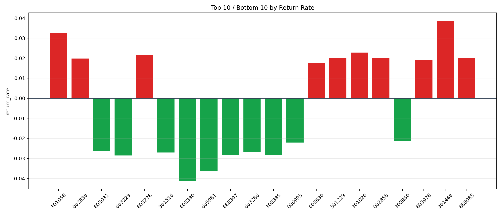

| repo_root | /home/haoranyou/data/output/alpha0.4_1w_5s_3ticks |
|---|---|
| period_months | 1 |
| period_label | 2025-07-02_to_2025-07-31 |
| start_time | 2025-07-02 09:50:12 |
| end_time | 2025-07-31 14:59:55 |
| n_trades | 127963 |
| n_symbols | 1631 |
| total_pnl | -26448.36534999978 |
| long_total_pnl | 128766.96480000019 |
| short_total_pnl | -155215.33015000008 |
| total_entry_notional | 1196215675.0 |
| long_entry_notional | 148859781.0 |
| short_entry_notional | 1047355894.0 |
| total_return_rate | -2.21100307434107e-05 |
| long_return_rate | 0.0008650218610760968 |
| short_return_rate | -0.00014819731386359113 |
| top_symbols_by_return | ["301448", "301056", "301026", "603278", "301229", "002858", "688085", "002838", "603976", "603630"] |
| bottom_symbols_by_return | ["603380", "605081", "603229", "688307", "300885", "301516", "603286", "603032", "000993", "300950"] |

